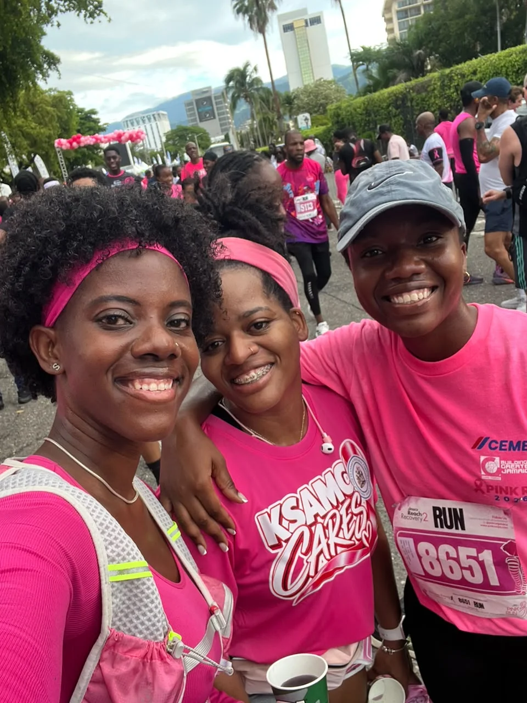

Floyd Brown
Strava time21:46
5.02 km · 4:20/km · 100th Strava activity

From the Pink Run in Kingston to the Sweat Across Jamaica Negril Pink Run, WRC members turned out for Breast Cancer Awareness Month and shared the morning with the community.

Results shared in the WRC social group after the Kingston Pink Run.
A few of the conversations and performances the club celebrated after the run.
Floyd Brown ran 5.02 km in 21:46, marking his 100th activity on Strava. He called the route tough after underestimating the elevation. Pilar Ellington celebrated a 31:20 5K personal best, improving her previous best by five seconds.
Charlette Rowe shared a 29:00 finish and described having to navigate a crowded route, including two abrupt stops when runners ahead slowed down.
Lyrae Maynard-Reid shared her own 32:33 result and the 33:06 result of her father, Josiah Maynard-Reid.
David Nelson shared a 34:37 run and said, “Really need to get back to sub 30 by year end.”
Jeffery and James joined the Negril Pink Run.
Held Sunday, October 25, 2026, at 5:45 AM on 7 Mile Beach, the event was organised by Sweat & Salty Run Club in collaboration with Running Events Jamaica for Breast Cancer Awareness Month.
Moments from Negril and Kingston.
Personal milestones, family performances and photos shared across Kingston and Negril made it a memorable Sunday for WRC.
For result, image or attribution corrections and removal requests, email wadadarunclub@gmail.com. Photography and media policy.
© 2026 Wadada Run Club · Run smart. Run together. wadadarunclub@gmail.com · Copyright & content use